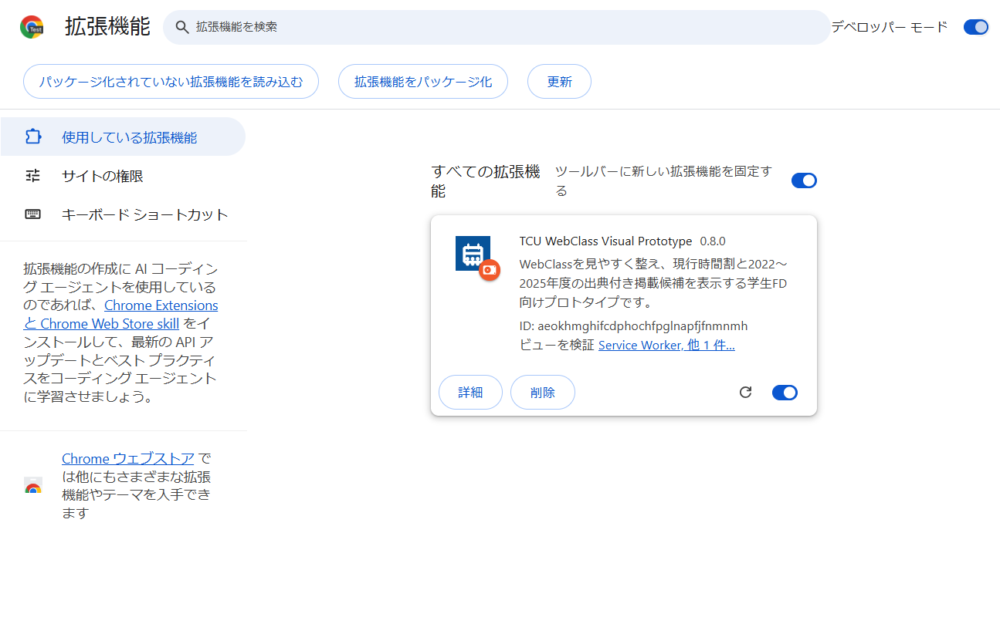
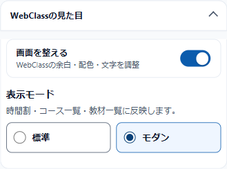
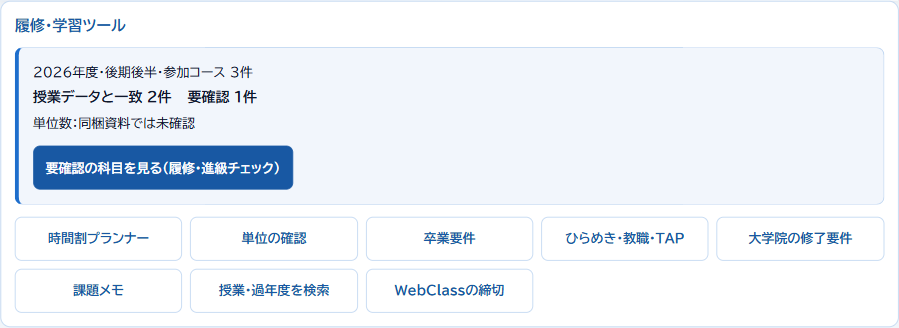
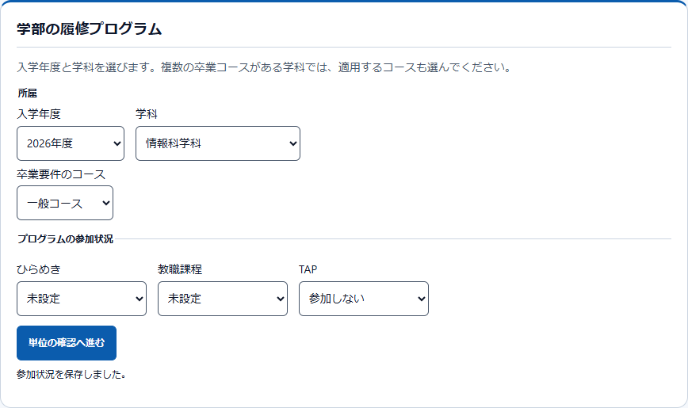
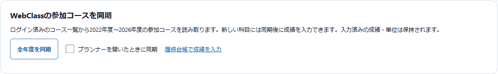
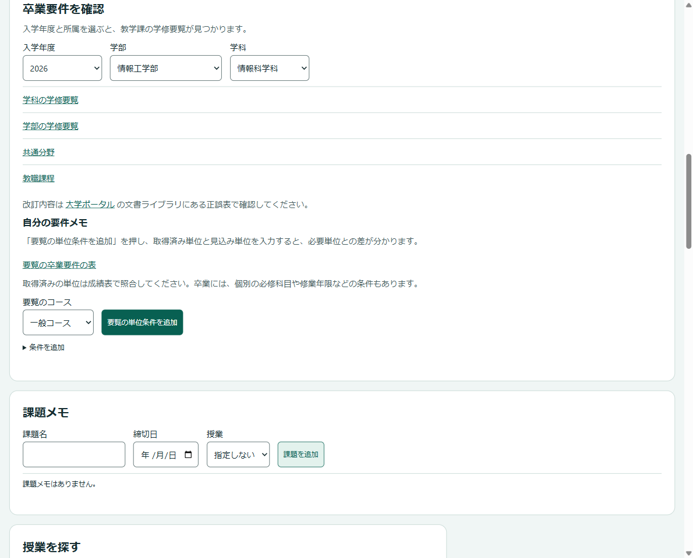
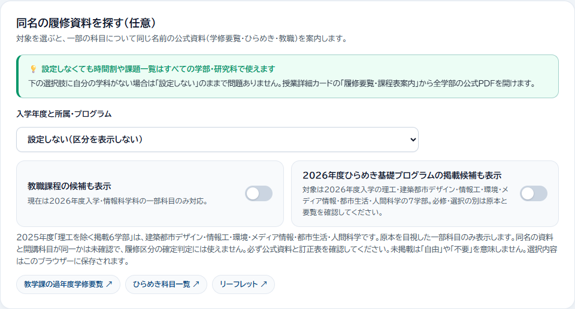

0始める前に確認
- パソコンで行います（スマートフォンのブラウザには入れられません）。
- ブラウザーは Google Chrome か Microsoft Edge。
- ZIPファイル
TCU_WebClass_Visual_…zipをダウンロード済み。
1ZIPファイルを「展開」する
ZIPは圧縮された状態です。そのままでは使えないので、まず展開します。
- Windows：ダウンロードしたZIPを右クリック → 「すべて展開…」 → 「展開」。
- Mac：ダウンロードしたZIPをダブルクリックすると、同じ場所にフォルダーが作られます。
- 展開したフォルダーを開き、
manifest.jsonが直下にあることを確認。
2「拡張機能」のページを開く
ブラウザーの上のアドレス欄に、次の文字を入力して Enter を押します。
chrome://extensions
edge://extensions
「コピー」を押して、アドレス欄に貼り付け（Windows：Ctrl + V、Mac：⌘ + V）→ Enter が確実です。リンクをクリックしても開けません（ブラウザーの仕様です）。
メニューから開く場合：右上の ︙（Edgeは …）→ 拡張機能 → 拡張機能を管理
3「デベロッパーモード」をオンにする
拡張機能ページの右上（Edgeは左下）にあるスイッチをオンにします。

「開発者向け」と聞くと不安になりますが、自分のパソコンにフォルダーから追加するための、ふつうの設定です。
4フォルダーを読み込む
- 「パッケージ化されていない拡張機能を読み込む」を押す。
- 手順1で展開したフォルダーのうち、
manifest.jsonが直下に見えるいちばん内側のフォルダーを選ぶ。ChromeでもEdgeでも同じです。 - 「フォルダーの選択」を押す。
- 一覧に「TCU WebClass Visual」が出て、スイッチがオンなら成功です。
おすすめ：ツールバーに固定する
アドレス欄の右にあるパズルのアイコン 🧩を押し、この拡張機能のピン 📌を押すと、いつでもアイコンから設定を開けます。
5WebClassを開いて使ってみる
- WebClass を開いて、いつも通りログインする。
- 「コースリスト」（時間割が並ぶ画面）を表示する。
- 時間割がカード表示になれば完了です 🎉 対応する科目には教室や担当教員も表示されます。
見た目を切り替える（標準 ／ モダン）
ブラウザー右上の拡張機能アイコンを押し、「WebClassの見た目」→「モダン」を選びます。詳細設定や、コース一覧の「表示オプション」からも切り替えられます。時間割・コース一覧・教材一覧にすぐ反映され、同じ場所で「標準」に戻せます。

キーボード操作
WebClassのタブを再読み込みするときは Windows：Ctrl + R または F5、Mac：⌘ + R。拡張機能ページを開くにはアドレス欄で Windows：Ctrl + L、Mac：⌘ + L を押して、手順2のURLを入力します。
履修・学習ツールを開く
拡張機能アイコンを押すと「履修・学習ツール」が表示されます。「時間割プランナー」「単位の確認」「卒業要件」「課題メモ」から使いたい機能を選びます。WebClassのコース一覧を開いているときは、授業・過年度検索やWebClassの締切にも移動できます。

履修案を作るときは「時間割プランナー」でクォーターを選び、空きコマの「＋」か「授業を探す」を使います。同名の授業は講義コードや担当教員を確認し、「追加」を押します。
所属を設定する
プランナーの先頭で「学部」か「大学院」を選びます。学部は入学年度・学科・履修プログラム、大学院は入学年度・研究科・専攻・課程を選びます。「単位の確認へ進む」を押すと、選んだ所属が表示されます。

単位の確認
プランナーを開くと、開いているWebClassコース一覧から参加科目を読み込みます。科目を手動で追加したり、取り込んだ科目を「外す」で除外し、「除外したWebClassコース」から復元できます。
- ログイン済みのWebClassでコース一覧を表示します。「単位の確認」の「全年度を同期」を押すと、2022〜2026年度の参加コースを履修台帳に追加できます。「プランナーを開いたときに同期」を有効にすると、次回から自動で読み取ります。
- 「履修台帳で成績を入力」を押し、科目カードで「成績・単位・算入を編集」を開きます。成績欄の初期値は「秀」です。成績照会に沿って評価・単位・算入先を確認し、保存します。成績表の内容をまとめて貼り付けることもできます。
- 「卒業・修了要件を確認する」を押すと、合格・認定し、算入を確認した単位と、選んだ所属の単位条件が表示されます。

卒業要件を確認する
- 時間割プランナーの上部で 「卒業・修了要件」 を押します。履修台帳から計算した結果の下で「年度別の学修要覧と手動の要件メモ」を開けます。
- 2022〜2026年度から自分の入学年度を選び、学部と学科を選びます。
- 必要に応じてコースを選び、「要覧の単位条件を追加」 を押します。
- 要覧と成績表を開き、取得済みと見込みの単位数を入力して保存します。時間割の授業は「時間割の授業を集計」で選ぶと、授業別の記録から単位が集計されます。

授業をどの条件に含めるかは、要覧を確認して選んでください。個別の必修科目・修業年限・最新の正誤表も大学の資料で確認してください。
大学院の修了要件を確認する
「履修・学習ツール」の「大学院の修了要件」で、入学年度・研究科・専攻・課程を選びます。総単位条件の原表を開き、成績表で確認した取得済み単位と見込み単位を入力できます。論文審査や研究指導などの条件は履修要綱とポータルの正誤表で確認してください。
WebClassの時間割から進級単位を確認する
- WebClassのコース一覧を開き、「履修・学習ツール」から「履修・進級チェック」を押します。確認画面の上部に読み込んだ年度・学期が表示されます。全学期を見る場合は、WebClassで「All」を選んで開き直します。
- 「要確認」の科目は、候補の担当教員・曜日時限・学期を見て講義コードを選びます。
- 「進級の総単位条件へ」を押すと、先頭で選んだ入学年度・所属と、履修台帳で進級への算入を確認した単位が表示されます。進級先を選んで条件を確認します。
- 科目の見込み単位には時間割で照合した講義のシラバス確認値、または時間割に保存した予定単位が入ります。「公式シラバスで単位を照合」で初回の読取を許可すると、次回から自動で照合します。
- 算入対象外の科目は0に変更できます。手入力と空欄も保存され、「標準値に戻す」で自動入力に戻せます。未確認の科目は成績表・要覧で単位数を確認してください。
確認画面に読み込んだ時間割は、現在のブラウザーセッション内に一時保持されます。正式な履修登録と成績の確認には大学ポータルを使います。
「課題メモ」では締切日と完了状態を記録できます。「別のブラウザーに引き継ぐ」から、時間割・単位・卒業要件メモ・課題メモをまとめて保存・復元できます。
ひらめき・教職・TAPの参加状況を設定する
WebClassの「履修・学習ツール」または拡張メニューで「ひらめき・教職・TAP」を開きます。プランナーの先頭で「学部」と入学年度を選ぶと、その年度の学科が選べます。学科を選び、参加・履修の状況を保存すると、コースカードと履修・進級チェックに確認事項が表示されます。TAP参加者には要覧の単位認定表にある読み替え候補が表示されます。認定された単位は成績表で確認してください。
従来の同名資料案内と過年度表示（任意）
詳細設定に入学年度を設定すると、WebClassのコース一覧に「過年度の参加コース」が出ます。年度を選んで「全学期を表示」を押すと、WebClassの参加コース一覧が切り替わります。
拡張機能ページでこの拡張機能の「詳細」→「拡張機能のオプション」を開き、「入学年度と所属・プログラム」を選びます。従来の教職・ひらめきスイッチは、参加状況を保存していない場合に使います。設定が不要な場合は「設定しない」のままで使えます。

毎日迷わず使える4つの機能
?困ったとき
何も表示が変わらない
① WebClassのタブを WindowsはCtrl + R、Macは⌘ + R で更新。② 「コースリスト」画面か確認（授業ページの中では一部表示のみです）。③ 拡張機能アイコン → スイッチがオンか確認。④ 拡張機能ページで、この拡張機能がオンか確認。
「マニフェスト ファイルがありません」と出る
選んだフォルダーが違います。manifest.json が直接入っているフォルダーを選んでください。ZIPの中を開いたままではなく、必ず「すべて展開」してから選びます。
「デベロッパーモードの拡張機能を無効にしてください」と出る
ブラウザー起動のたびに出る案内です。×で閉じてそのまま使えます（「キャンセル」を選ぶ）。
デベロッパーモードのスイッチが押せない・拡張機能が追加できない
大学・会社などの管理PCでは、組織の設定で制限されていることがあります。その場合は個人のPCで試すか、管理者に確認してください。
ブラウザーを再起動したら消えた／使えなくなった
展開したフォルダーを削除・移動していないか確認してください。移動した場合は、手順4でもう一度読み込み直します。
元の画面に戻したい
拡張機能アイコンの右上スイッチをオフにするだけで、元のWebClass画面に戻ります。完全に消すときは、拡張機能ページで「削除」。
新しいバージョンに更新するには／設定を移すには
①旧版の時間割プランナーで「別のブラウザーに引き継ぐ」を開き、「バックアップを書き出す」を押します。表示設定や独自に追加した時間割データも必要に応じて書き出すか控えてください。②新版のZIPを展開します。③拡張機能ページで旧版をオフにして、新版のフォルダー（manifest.json が直下にあるもの）を読み込みます。④新版のプランナーでバックアップを読み込み、記録が戻ったことを確認します。⑤確認できたら旧版を削除します。
表示された教室・担当・時間が資料と違う
2026年度の時間割は調査用スナップショットで、最新資料との全件照合は未完了です。過年度データの多くは未確認の自動抽出候補です。授業詳細のPDFリンクから元の行を確認してください。休講・教室変更はWebClassのお知らせを優先してください。
プライバシー
- 動作するのは
webclass.tcu.ac.jpのみ。 - 時間割表示のための科目情報と、締切一覧のための教材名・締切・状態をWebClassの画面から読み取ります。ID・パスワード・提出物の内容は読み取りません。入力・貼り付けした成績はプランナーが端末内で処理します。
- 設定と上書きデータはこのブラウザー内に保存します。公開シラバスへの照会では講義コード・開講年度・学期だけを送ります。